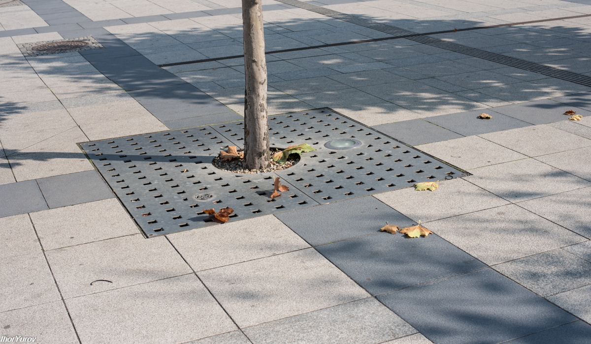
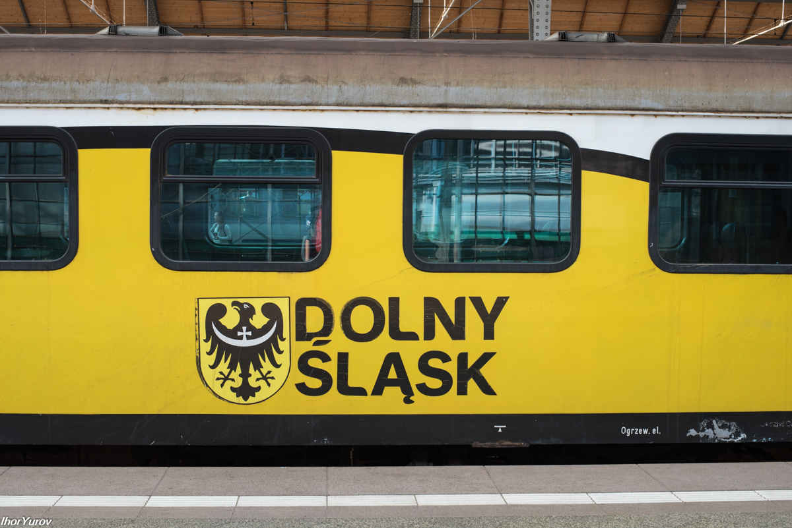
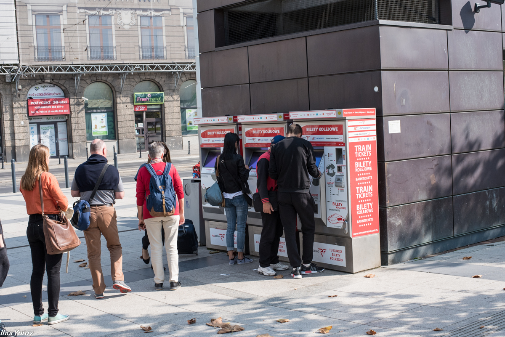

Аэропорт Николая Коперника, Вроцлав
12/11/2017

Пока я занимаюсь киевскими трамваями, расскажу-ка о моем путешествии из Аэропорта (Вроцлав) до жд вокзала. Вроцлавский аэропорт Коперника (польск. Port Lotniczy Wrocław im. Mikołaja Kopernika) - международный аэропорт, на юго-западе Польши, расположен примерно в 10 километрах от центра города.
История аэропорта началась в 1930-е годы, когда было построено лётное поле для нужд немецкой армии. В то время он носил наименование Бреслау-Шёнгартен (нем. Breslau-Schöngarten). В феврале 1945 года аэропорт был занят советскими войсками. Гражданская авиация стала использовать поле с июня 1945 года. 11 марта 2012 года в аэропорту Вроцлав начал работу новый терминал, построенный к Евро 2012. Старый терминал с этого момента закрыт для пассажиров и используется для обслуживания частных самолетов, также в нём находятся: школа пилотов, магазин для пилотов, офисы авиакомпаний.
Вот сайт вроцлавского аэропорта: http://airport.wroclaw.pl/en/. В нём базируются компании: EUROWINGS, LOT, Lufthansa, Ryanair, SAS Scandinavian Airlines, SWISS INTERNATIONAL AIRLINES, Wizz Air.
При выходе из терминала, справа, недалеко расположена остановка общественного транспорта. Днем ходит автобус №106 ( 5-00 до 23-00), можно доехать в центр города, а если ехать до конца, то можно добраться до жд вокзала/автовокзала Wrocław Główny. Ночью тоже ходит автобус по этому же маршруту только № 206 (с 23-00 до 5-00). Дорога занимает около 40 минут. Автобусы ходят каждые 20-30 минут. Я снял в банкомате немного наличных на проезд (банкоматы есть в здании аэропорта) в злотых, но они так и не понадобились. На остановке стоит автомат для продажи билетов. Принимает как наличные, так и карточки. И в самом автобусе был небольшой автомат, в котором можно было заплатить за проезд, но только банковской карточкой. Стоимость проезда – 3 злотых.
Выйдя на улицу, создается ощущение огромной свободы. Вся территория довольно обширная и очень хорошо благоустроена. Везде чистота и порядок. Много зелени.
Парковка для велосипедов.
Вот такие стройные деревца и подстриженный кустарник.
Есть фонтаны и лавочки.
Дорога около аэропорта.
Специально выделенные места парковки для авто людей с особыми нуждами.
Оставить машину можно в течение 4 часов, если больше, будет за деньги.
Вместо зеленых газонов мелкий щебень. Хорошее решение, отсутствие грязи и необходимости обслуживания зеленых газонов.
Главное, что есть вай-фай...
Аэропорт удобный, современный и красивый. Территория вокруг сделана с большим размахом.
А вот главный жд вокзал Вроцлава (Польша).
Только мне отдается турецким стилем?
Травка подстрижена, все зелено, это было начало сентября.
Креативные кресла рядом с вокзалом.
Специальные плиты для защиты от вытаптывания.
Зал жд вокзала внутри.
А это уже перрон.
Вот такие поезда, похожи на кирпичи
Красные тоже.
Станция крытая.
Часы.
Уходящий поезд. Счастливого пути!
При входе на перроны, на перилах есть таблички с шрифтом Брайля, видимо с номером перрона.
На улице автоматы для продажи билетов.
Продолжим.